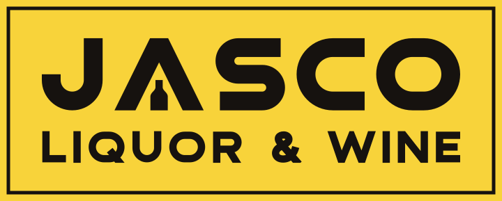

Logo takes
A. The sign.
Closest to the existing branding. The site uses this one.

B. The bottle.
Same sign, with a bottle inside the A.
C. The tag.
Shaped like a shelf price tag.
Icon.
For the browser tab and profile pictures.